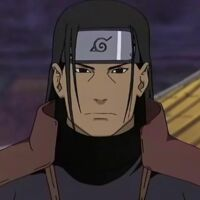
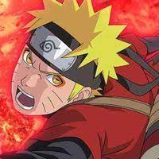
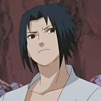
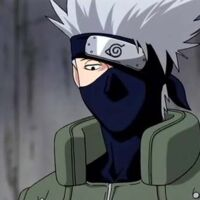
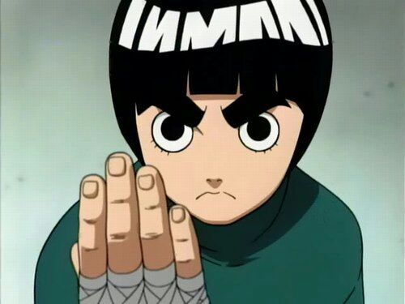
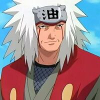

Hashirama Senju (千手柱間 Senju Hashirama?) foi o Primeiro Hokage de Konoha (初代火影 Shodai Hokage?)
Literalmente significa "Primeira Sombra do Fogo".

Naruto Uzumaki (うずまきナルト Uzumaki Naruto?) O 3º Jinchūriki do Kurama. Um shinobi de Konoha, a reencarnação atual de
Ashura e o Protagonista da série. Se torna o Sétimo Hokage (七代目火影 Nanadaime Hokage?).

Sasuke Uchiha (うちは サスケ Uchiha Sasuke?) é um dos membros do Time 7. Ele foi criado para ser um rival de Naruto, bem
como um "gênio legal", que Kishimoto acreditava ser parte integrante de uma rivalidade ideal.

Kakashi Hatake (はたけカカシ Hatake Kakashi?) era o Sexto Hokage (六代目火影 Rokudaime Hokage?) literalmente significa
"Sexta Sombra do Fogo" de Konoha.

Rock Lee (ロック・リー Rokku Rī?) é um membro do Time Guy e o estudante favorito do líder da equipe, Might Guy.
Na academia ninja, ele era incapaz de usar ninjutsu e genjutsu, mas sua persistência impressionou Guy.

Jiraiya (自来也?) era um ninja da Vila da Folha e um dos professores de Naruto. Enquanto criança, Jiraiya esteve sob a tutela do Terceiro Hokage, juntamente de seus
companheiros de time, Tsunade e Orochimaru.